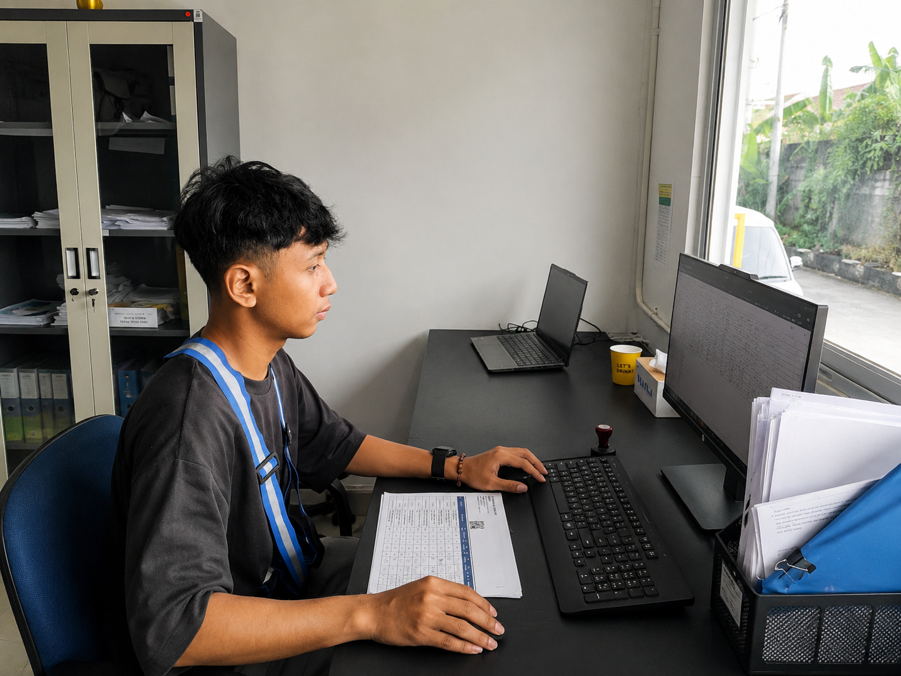

Aturan Singkat di Lapangan
Materi tidak ditemukan. Coba kata kunci lain.
Panduan Umum
Digunakan semua mitra sebelum mulai bekerja agar proses berjalan rapi, aman, dan mudah ditelusuri.
Briefing sebelum mulai kerja
Pastikan pembagian tugas, area kerja, target proses, dan PIC eskalasi sudah dipahami.
Gunakan APD dan jaga kebersihan
Gunakan perlengkapan kerja sesuai aturan warehouse fresh dan jaga area tetap bersih.
Periksa alat kerja
Pastikan scanner, dokumen, keranjang, label, dan alat tulis tersedia sebelum proses dimulai.
Ikuti instruksi sistem
Semua proses yang memakai WMS harus mengikuti data dan status yang tampil di sistem.
Inbound Admin
Fokus pada registrasi vendor, pengecekan dokumen, dan persiapan lembar kerja untuk proses penerimaan.
Terima registrasi vendor
Pastikan vendor sudah datang sesuai jadwal dan membawa dokumen yang dibutuhkan.
Cek kelengkapan dokumen
Periksa PO dan Surat Jalan. Jika ada data tidak sesuai, tahan proses dan laporkan ke PIC.
Cetak lembar HO
Siapkan Lembar Hand Over untuk digunakan checker saat proses hitung fisik.
Satukan dokumen
Gabungkan HO, PO, dan Surat Jalan agar mudah dibawa ke area pengecekan.


Inbound Checker
Fokus pada pengecekan fisik barang, pencatatan hasil hitung, dan proses penerimaan di WMS.
Ambil dokumen dari admin
Bawa HO, PO, dan Surat Jalan ke area pengecekan.
Tunggu screening quality
Pastikan tim QA Inbound sudah melakukan screening kualitas sebelum barang dihitung.
Hitung jumlah barang
Catat jumlah aktual pada lembar HO. Tulis selisih jika jumlah berbeda dari dokumen.
Proses penerimaan di WMS
Scan QR produk dan QR Package ID, lalu pastikan status penerimaan berhasil.
Tempel Package ID
Tempel label pada keranjang yang sesuai agar barang mudah dilacak.


Inbound Labeling
Fokus pada validasi label, pencetakan label, dan penempelan label pada barang atau keranjang yang tepat.
Terima data dari checker
Pastikan barang sudah dihitung dan sudah siap diberi label.
Cetak label sesuai data
Pastikan nama barang, jumlah, dan kode terbaca jelas sebelum ditempel.
Tempel label di posisi aman
Label tidak boleh menutup informasi penting dan tidak boleh mudah lepas.
Validasi ulang
Scan atau cek label untuk memastikan data sesuai dengan barang dan lokasi.


Inventory Fresh
Fokus pada putaway, penjagaan stok, pengecekan lokasi, dan penanganan barang tidak layak.
Putaway barang
Pindahkan barang ke lokasi sesuai instruksi WMS dan aturan penyimpanan fresh.
Cek kesesuaian lokasi
Pastikan kode lokasi, jenis barang, dan label sesuai sebelum barang ditinggalkan.
Jaga kondisi stok
Susun barang dengan rapi, hindari tumpukan berlebih, dan pisahkan barang bermasalah.
Laporkan badstock
Barang rusak, busuk, bocor, atau tidak sesuai kualitas harus dilaporkan ke PIC.
Outbound Fresh
Fokus pada picking, sorting, pengecekan akhir, dan loading barang ke armada.
Ambil barang sesuai tugas
Picker mengambil barang berdasarkan instruksi WMS dan memastikan item yang diambil benar.
Sortir per tujuan
Kelompokkan barang sesuai rute, toko, atau tujuan yang tercantum pada sistem.
Checker melakukan validasi
Cek ulang item, jumlah, kondisi barang, dan label sebelum barang masuk proses loading.
Loader memuat barang
Muat barang sesuai urutan keberangkatan dan pastikan barang tidak rusak saat dipindahkan.
